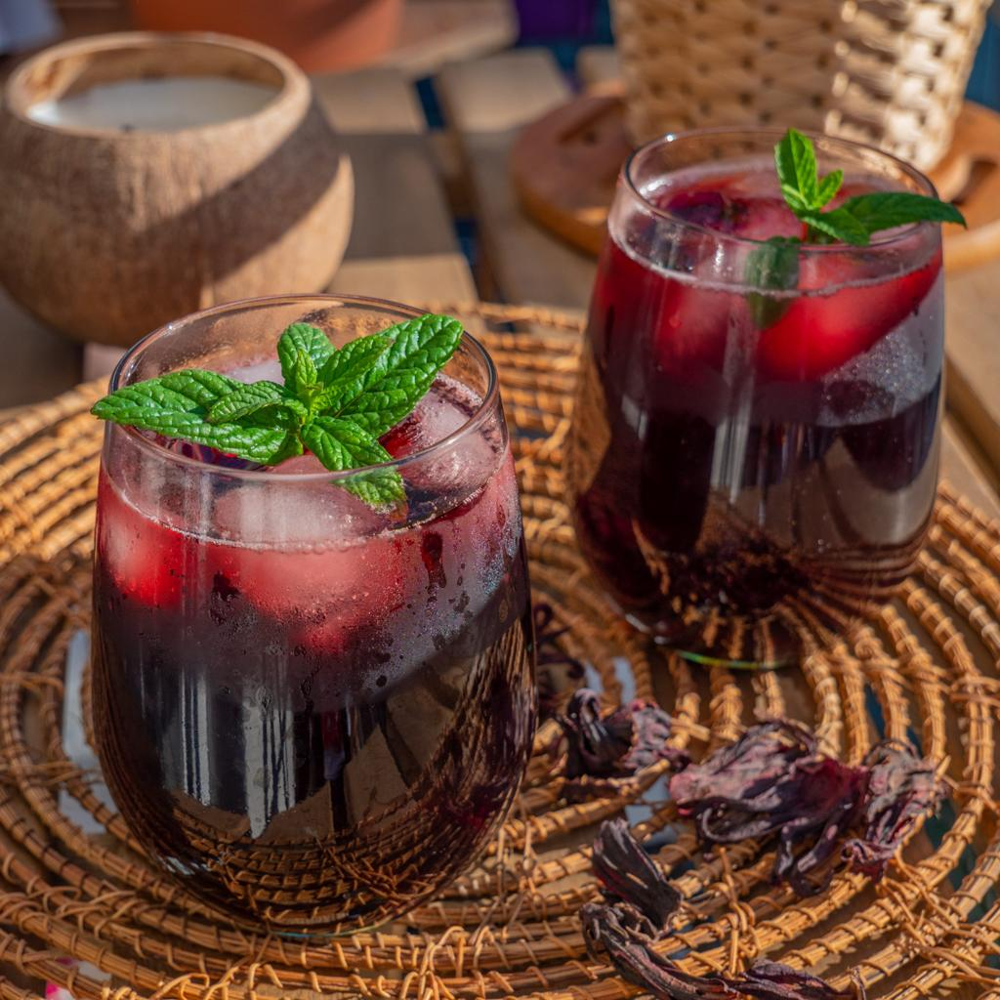
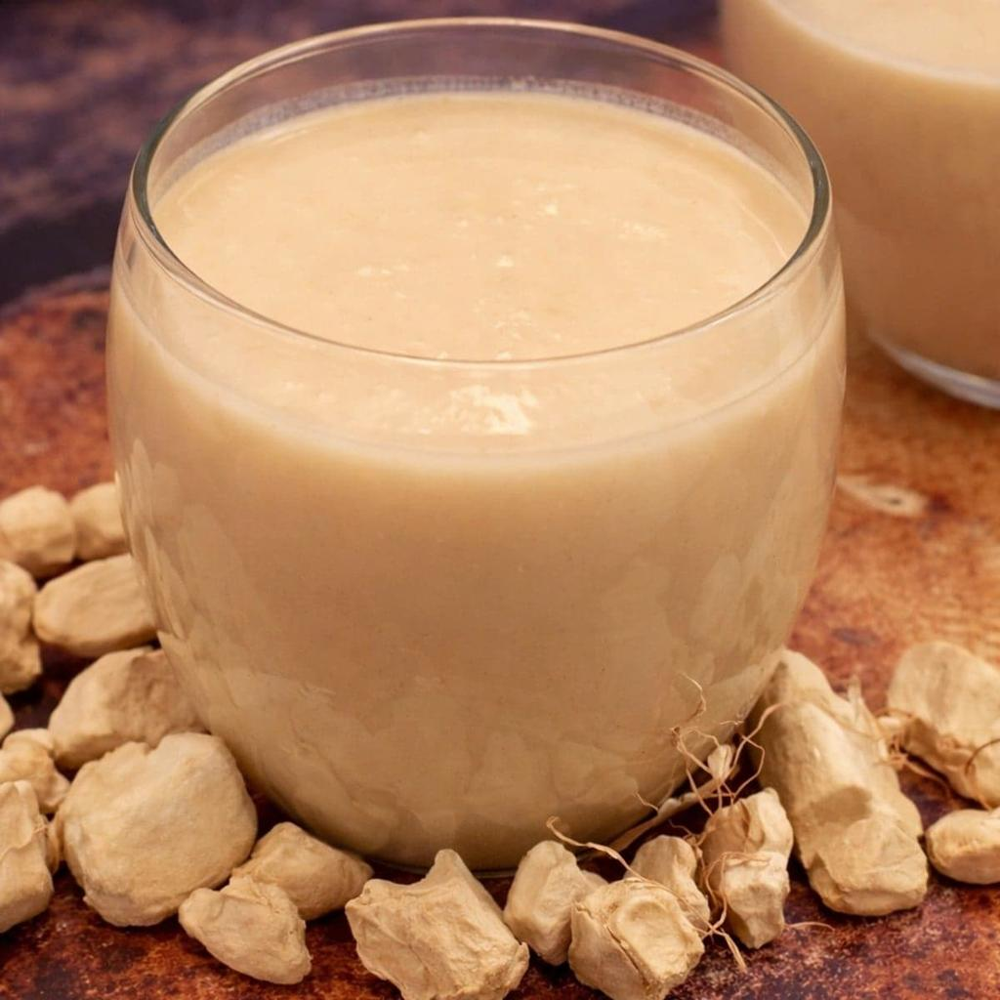
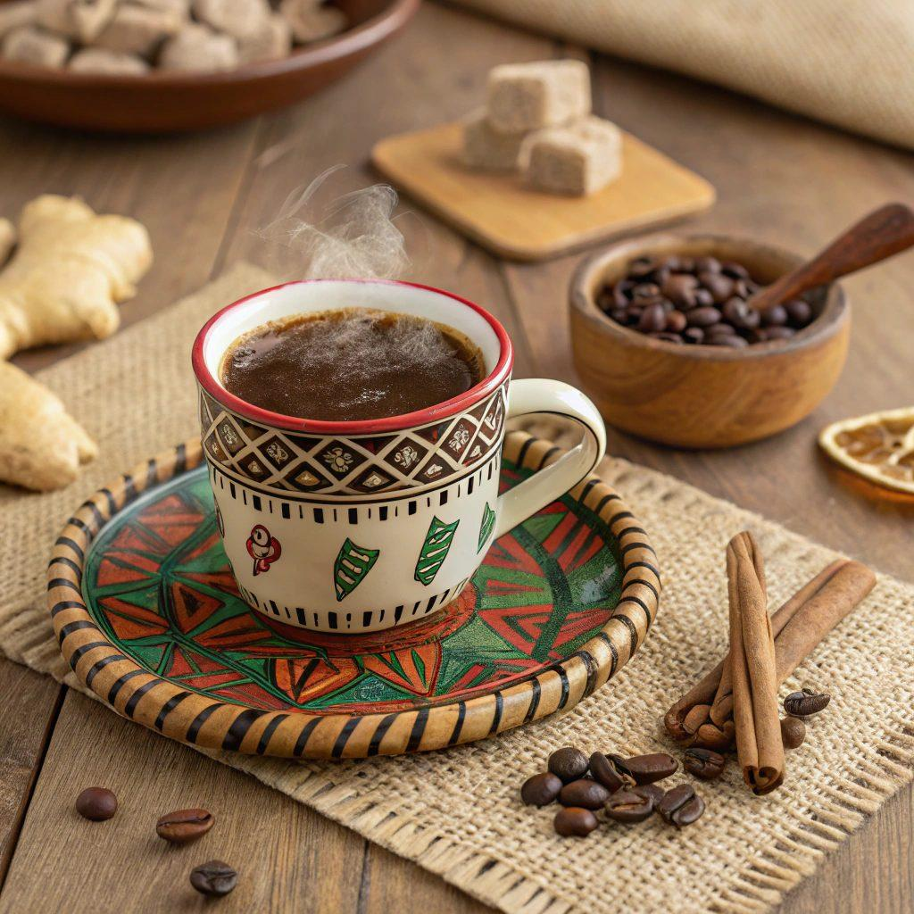
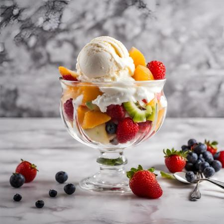
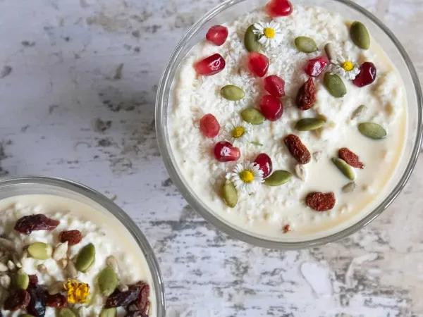
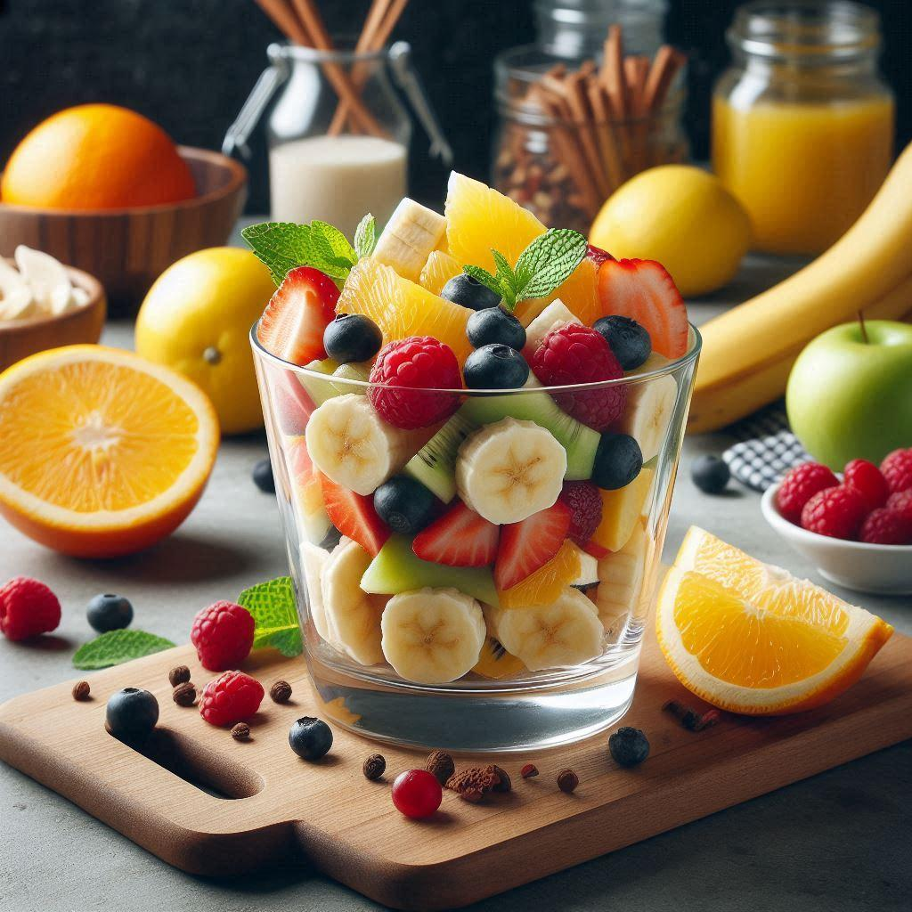
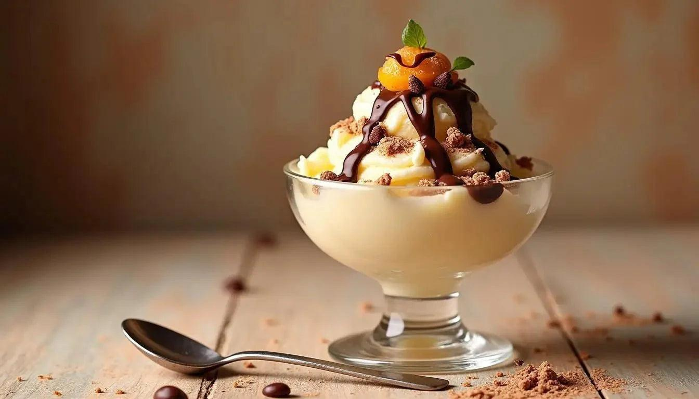

Nos Plats

Boisson traditionnelle sénégalaise à base de fleurs d'hibiscus, fraîche et parfumée.

Délicieuse boisson préparée à partir du fruit du baobab, riche en vitamines.

Café traditionnel sénégalais parfumé au poivre de Guinée, au goût unique.

Dessert traditionnel sénégalais à base de couscous de mil, de lait caillé et de fruits secs.

Dessert traditionnel sénégalais à base de couscous de mil, de lait caillé et de fruits secs.

Un mélange de fruits frais de saison, léger, coloré et rafraîchissant.

Glace artisanale disponible en plusieurs parfums : vanille, chocolat, mangue et fraise.